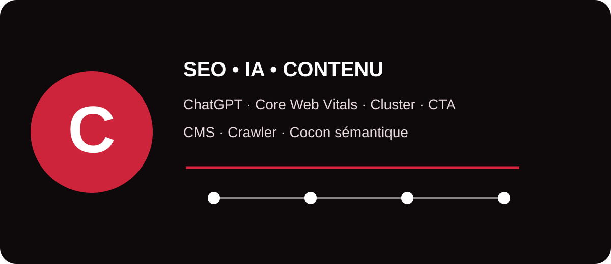

Le SEO moderne croise désormais référencement, intelligence artificielle, performance web, contenu et acquisition. Ce glossaire MinoSeo rassemble les principaux termes en C afin de donner aux décideurs, marketeurs et équipes web des définitions concrètes et directement exploitables.

Consultant SEO IA
Un consultant SEO IA accompagne les entreprises à l’intersection du référencement naturel et des nouveaux environnements génératifs. Son rôle ne consiste pas simplement à utiliser des outils d’intelligence artificielle : il analyse la visibilité d’une marque dans les moteurs, structure les contenus pour qu’ils soient compréhensibles par les systèmes de recherche et aide les équipes à industrialiser certaines tâches sans sacrifier la qualité. Il peut travailler sur la recherche de sujets, les entités, le maillage interne, la qualité éditoriale, les données structurées et le suivi de la présence dans les réponses générées. La valeur du consultant repose surtout sur sa capacité à relier les objectifs business, les données SEO et les usages de l’IA.
Consultant SEO ChatGPT
L’expression consultant SEO ChatGPT désigne généralement un spécialiste qui aide une marque à adapter sa stratégie de contenu aux usages conversationnels et à exploiter ChatGPT comme outil de travail. Il peut former les équipes au prompting, concevoir des processus de recherche et de contrôle, structurer des contenus plus faciles à comprendre et analyser la manière dont une marque est décrite dans les assistants IA. Il faut toutefois distinguer l’optimisation d’un site pour les moteurs de recherche de l’utilisation de ChatGPT comme assistant : aucune méthode sérieuse ne peut garantir qu’une marque sera systématiquement citée dans une réponse générée.
ChatGPT
ChatGPT est un assistant conversationnel fondé sur des modèles d’intelligence artificielle. Dans un contexte SEO, il peut aider à explorer des angles éditoriaux, résumer des données, préparer des briefs, reformuler des passages ou accélérer certaines analyses. Son utilisation doit rester encadrée : les réponses générées peuvent contenir des erreurs et doivent être vérifiées avant publication. Pour une stratégie de visibilité, l’enjeu n’est donc pas de produire davantage de texte, mais d’utiliser l’IA pour améliorer la recherche, la structure, la clarté et la valeur ajoutée du contenu.
Claude AI
Claude AI est un assistant d’intelligence artificielle conversationnelle développé par Anthropic. Pour les professionnels du contenu et du SEO, il peut être utilisé pour analyser des documents, structurer des idées, synthétiser des informations ou assister la rédaction. Comme avec tout modèle génératif, ses productions nécessitent une validation humaine, notamment pour les faits, les chiffres et les recommandations techniques. La multiplication des assistants IA renforce l’intérêt d’un contenu de marque clair, cohérent, bien sourcé et facilement interprétable.
Core Web Vitals
Les Core Web Vitals sont des indicateurs centrés sur l’expérience réelle des utilisateurs. Ils évaluent notamment la vitesse d’affichage du contenu principal, la réactivité et la stabilité visuelle. Ils constituent une composante de l’expérience de page prise en compte par les systèmes de Google, mais de bons scores ne garantissent pas à eux seuls un meilleur classement. Une optimisation pertinente associe performance technique, compatibilité mobile, sécurité et qualité du contenu.
Content Delivery Networks
Un Content Delivery Network (CDN) est un réseau de serveurs distribués géographiquement qui délivre les ressources d’un site depuis un point proche de l’utilisateur. Images, fichiers CSS, JavaScript ou pages mises en cache peuvent ainsi être servis plus rapidement. Un CDN peut améliorer la disponibilité et réduire la latence, ce qui contribue à une meilleure expérience utilisateur. En SEO technique, il doit être correctement configuré afin d’éviter les erreurs de cache, les ressources bloquées ou des variantes d’URL inutiles.
Coût d’Acquisition Client
Le Coût d’Acquisition Client (CAC) mesure le coût moyen nécessaire pour obtenir un nouveau client. Il peut intégrer les dépenses publicitaires, commerciales, technologiques et humaines selon la méthode retenue. Cet indicateur aide à comparer l’efficacité des canaux d’acquisition. Le SEO nécessite souvent un investissement initial important, mais les contenus et pages bien positionnés peuvent continuer à générer des opportunités dans le temps, ce qui rend l’analyse du CAC particulièrement utile pour arbitrer entre acquisition payante et organique.
Customer Lifetime Value
La Customer Lifetime Value (CLV ou LTV) estime la valeur économique qu’un client peut générer pendant toute sa relation avec l’entreprise. Croisée avec le CAC, elle permet de juger si un modèle d’acquisition est rentable. En stratégie SEO, cette notion invite à ne pas évaluer toutes les requêtes uniquement selon leur volume : une requête très qualifiée et peu recherchée peut attirer des prospects dont la valeur potentielle est nettement supérieure.
Cookies
Les cookies sont de petits fichiers ou identifiants enregistrés par un site via le navigateur pour conserver certaines informations : session, préférences, mesure d’audience ou personnalisation. Ils jouent un rôle important dans l’analytics et le marketing, mais leur utilisation est encadrée par les règles de protection des données et les choix de consentement. Pour le SEO, leur présence n’améliore pas directement le classement ; l’enjeu est surtout de maintenir une expérience rapide et accessible, y compris lorsque l’utilisateur refuse les cookies non essentiels.
Camel case
Le camel case est une convention d’écriture qui consiste à juxtaposer plusieurs mots en utilisant des majuscules pour marquer leurs limites, par exemple monNomDeVariable. Cette notation est courante en programmation et dans certaines conventions de nommage. En SEO, elle n’est pas un facteur de classement en soi. Pour les URL destinées aux internautes, des mots lisibles séparés par des tirets sont généralement plus simples à comprendre et à partager.
Corrélation et Causalité
La corrélation indique que deux phénomènes évoluent ensemble ; la causalité signifie que l’un provoque réellement l’autre. Cette distinction est essentielle en SEO. Observer que les pages les mieux classées possèdent davantage de liens, de mots ou d’images ne prouve pas que chacun de ces éléments provoque le classement. Les audits sérieux croisent les données, formulent des hypothèses et testent les changements avant de transformer une corrélation en recommandation.
Candy AI
Candy AI est le nom d’un service conversationnel utilisant l’intelligence artificielle, orienté vers la création et l’interaction avec des compagnons virtuels. Dans un glossaire SEO, ce terme illustre surtout la diversification des plateformes IA et des requêtes de marque. Pour analyser ce type de requête, le professionnel SEO étudie l’intention réelle de l’utilisateur, la concurrence dans les résultats, la réputation de la marque et les contraintes éditoriales ou réglementaires propres au secteur, plutôt que de traiter le nom comme un mot-clé générique.
CSS
Le CSS (Cascading Style Sheets) est le langage qui contrôle la présentation visuelle d’une page HTML : couleurs, typographie, espacements, responsive design ou animations. Un CSS mal optimisé peut ralentir l’affichage ou provoquer des décalages visuels. À l’inverse, une feuille de style bien organisée contribue à une interface rapide et stable. Le SEO technique surveille notamment le poids des fichiers, les ressources bloquantes et le comportement du rendu sur mobile.
Chaînes et boucles de redirection
Une chaîne de redirection apparaît lorsqu’une URL redirige vers une deuxième, puis une troisième avant d’atteindre la destination finale. Une boucle de redirection renvoie l’utilisateur ou le robot vers une séquence qui ne se termine pas correctement. Ces situations dégradent l’expérience, ralentissent l’exploration et compliquent la maintenance. Il est préférable de faire pointer les liens internes directement vers l’URL finale et de corriger les règles de serveur qui génèrent des boucles.
Cloaking
Le cloaking consiste à présenter volontairement un contenu différent aux moteurs de recherche et aux utilisateurs afin de manipuler la visibilité. Cette pratique trompeuse est contraire aux règles anti-spam des moteurs. Il ne faut pas la confondre avec une adaptation légitime de l’interface selon l’appareil, la langue ou les préférences, lorsque le contenu essentiel reste cohérent. Une stratégie durable doit rendre la même proposition de valeur accessible aux visiteurs comme aux robots.
Content siloing
Le content siloing consiste à organiser les contenus en ensembles thématiques clairement structurés. Chaque silo regroupe des pages proches sémantiquement et les relie de manière logique. L’objectif est double : aider l’utilisateur à approfondir un sujet et faciliter la compréhension de l’architecture par les moteurs. Un silo ne doit toutefois pas devenir une prison : lorsque deux sujets sont réellement liés, un lien transversal pertinent reste utile.
Cache Google
Le terme Cache Google désignait historiquement la copie d’une page que Google permettait parfois de consulter depuis ses résultats. Pour un professionnel SEO, la notion de cache reste importante au sens large : navigateurs, CDN et serveurs conservent des ressources afin d’accélérer leur restitution. Il ne faut toutefois pas utiliser une ancienne copie mise en cache comme preuve absolue de l’état actuel de l’index. Les outils d’inspection, les journaux serveur et les tests en direct sont plus adaptés au diagnostic moderne.
CPA marketing
Le CPA, ou coût par acquisition/action, mesure le coût moyen nécessaire pour obtenir une conversion définie : vente, inscription, demande de devis ou autre action. En marketing à la performance, il sert à piloter la rentabilité des campagnes. Comparer le CPA des campagnes payantes au coût d’acquisition organique aide à décider où investir, tout en tenant compte du délai nécessaire au SEO pour produire ses effets.
Content spinning
Le content spinning consiste à générer de nombreuses variantes d’un même texte, souvent par remplacement automatique de mots ou reformulation à grande échelle. Utilisé pour créer artificiellement des pages en masse, il produit fréquemment des contenus répétitifs et pauvres en valeur. Les moteurs privilégient les contenus utiles et originaux ; l’automatisation doit donc servir l’analyse ou la production assistée, pas la duplication industrielle de pages sans bénéfice réel pour l’utilisateur.
Cluster
En SEO, un cluster est un groupe de contenus organisés autour d’un thème central. Une page pilier traite le sujet de manière large tandis que des pages complémentaires répondent à des questions plus précises. Le maillage interne relie ces contenus afin de créer un parcours cohérent. Cette approche aide à couvrir un univers sémantique sans forcer tous les mots-clés sur une seule page.
CTR marketing
Le CTR (Click-Through Rate), ou taux de clic, correspond à la proportion de clics obtenus par rapport au nombre d’affichages. En SEO, il peut être suivi pour les impressions dans les résultats de recherche ; en publicité, il mesure aussi l’attractivité d’une annonce. Le CTR dépend de nombreux facteurs : position, intention, titre, extrait, notoriété ou présence de fonctionnalités enrichies. Il doit donc être interprété dans son contexte.
CTA
Un CTA (Call to Action) est un appel à l’action invitant l’utilisateur à effectuer l’étape suivante : demander un devis, télécharger un guide, appeler, s’inscrire ou découvrir un service. Un bon CTA est visible, compréhensible et cohérent avec l’intention de la page. En SEO, attirer du trafic n’est qu’une partie du travail : les CTA transforment cette visibilité en interactions mesurables et en opportunités commerciales.
CPC Marketing
Le CPC (coût par clic) correspond au montant payé pour chaque clic dans un modèle publicitaire au clic. Il est principalement associé au référencement payant et aux plateformes publicitaires. Pour une équipe SEO, le CPC peut aussi fournir un indice sur la valeur commerciale et la concurrence autour de certaines requêtes, mais il ne doit jamais être utilisé seul pour choisir une stratégie de contenu.
CMS website
Un CMS (Content Management System) est un système de gestion de contenu permettant de créer et administrer un site sans développer chaque page manuellement. WordPress, Drupal ou d’autres solutions proposent des interfaces, thèmes et extensions. Pour le SEO, le CMS doit permettre de maîtriser les titres, URL, balises, redirections, sitemap, données structurées et performances. Le choix de l’outil compte moins que la qualité de sa configuration et de sa maintenance.
Comprendre le référencement
Comprendre le référencement, c’est comprendre comment une page est découverte, explorée, interprétée, indexée puis sélectionnée pour répondre à une recherche. Le SEO combine technique, contenu, architecture, popularité et expérience utilisateur. À l’époque des moteurs enrichis par l’IA, il faut également rendre l’information explicite, fiable et facile à extraire. L’objectif reste le même : proposer la meilleure ressource possible pour une intention donnée, tout en facilitant son accès aux systèmes de recherche.
Content marketing
Le content marketing consiste à attirer et fidéliser une audience grâce à des contenus utiles : guides, études, vidéos, outils, newsletters ou comparatifs. Le SEO et le content marketing se renforcent mutuellement : le premier apporte une compréhension de la demande et de la découvrabilité, le second construit une relation avec l’audience et nourrit le parcours de conversion. Une stratégie efficace part des problèmes du client plutôt que d’un simple calendrier de publication.
Crawler SEO
Un crawler SEO est un logiciel qui parcourt un site de lien en lien pour reproduire une partie du comportement d’un robot d’exploration. Il aide à détecter les erreurs 404, redirections, balises manquantes, pages orphelines, canonicals incohérentes ou profondeurs excessives. Des outils comme Screaming Frog sont couramment utilisés pour ce type d’audit. Les données du crawler gagnent à être croisées avec la Search Console, l’analytics et les logs serveur.
Cocon sémantique
Le cocon sémantique est une méthode d’organisation éditoriale et de maillage interne qui rapproche les pages selon leur relation sémantique et les besoins de l’internaute. Les contenus sont structurés en niveaux et reliés de façon à renforcer la continuité du parcours. Cette approche peut améliorer la compréhension thématique d’un site, à condition de rester naturelle : le maillage doit d’abord aider le lecteur et non créer artificiellement des liens répétitifs.
Synthèse : les notions en C par grande famille
| Famille | Exemples | Objectif |
|---|---|---|
| SEO & IA | Consultant SEO IA, ChatGPT, Claude AI | Adapter la stratégie aux nouveaux usages de recherche et de production. |
| Technique | Core Web Vitals, CDN, CSS, redirections, crawler, cache | Améliorer exploration, rendu, vitesse et fiabilité. |
| Contenu | Content marketing, cluster, content siloing, cocon sémantique | Structurer l’expertise et répondre aux intentions. |
| Conversion | CTA, CTR, CAC, CLV, CPA, CPC | Relier visibilité, engagement et rentabilité. |
| Risques | Cloaking, content spinning | Éviter les pratiques manipulatrices ou sans valeur. |
Du vocabulaire à une stratégie SEO/GEO cohérente
Connaître ces termes facilite les échanges avec les développeurs, les équipes marketing et les prestataires, mais leur véritable intérêt apparaît lorsqu’ils sont reliés dans une stratégie. MinoSeo accompagne les entreprises depuis plus de 15 ans sur le SEO, le GEO, le contenu et le netlinking afin de transformer ces notions techniques en décisions mesurables.
Vous souhaitez améliorer votre visibilité SEO et IA ?
MinoSeo peut auditer votre site, identifier les priorités techniques et éditoriales, puis construire une stratégie adaptée à vos objectifs.
Demander un audit gratuit